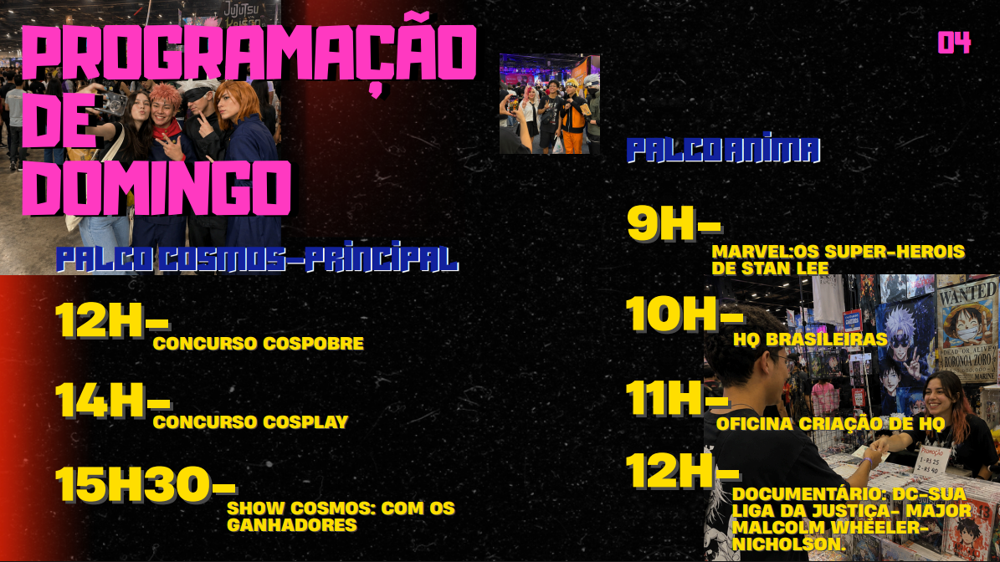
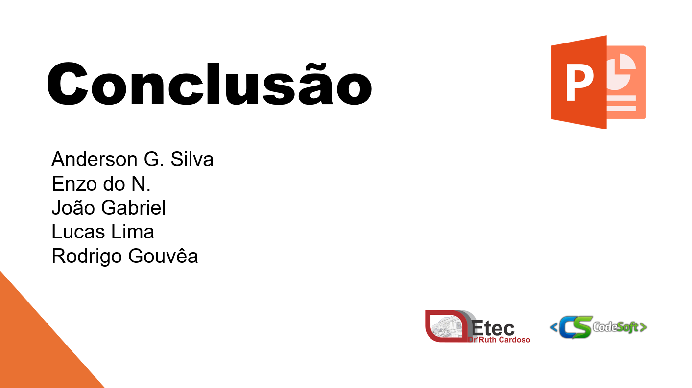
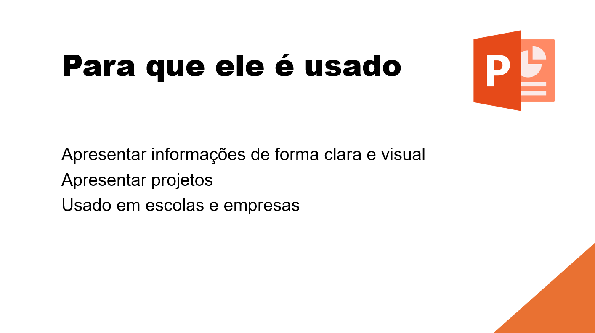
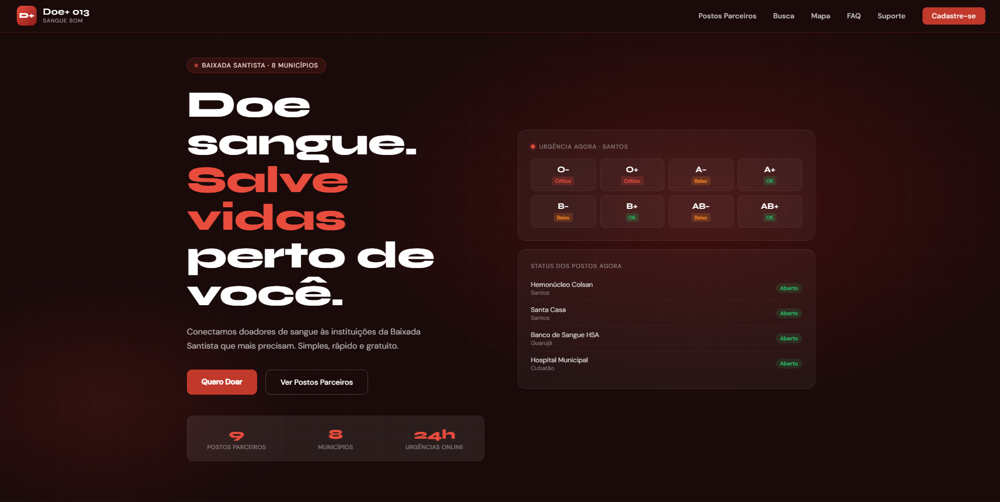

Lucas Lima
Desenvolvedor • Produtor Musical • Estudante
Meu nome é Lucas Lima. Atualmente, estudo Logística na Escola Martim Afonso e Desenvolvimento de Sistemas na ETEC, buscando desenvolver conhecimentos tanto na área de gestão quanto na tecnologia.
Além dos estudos, sou produtor musical e gosto de criar músicas como forma de expressão e diversão. A música presente neste site foi produzida por mim, representando um pouco da minha criatividade.
Estou sempre em busca de aprender coisas novas, desenvolver minhas habilidades e criar projetos que unam tecnologia, criatividade e inovação.
Cosplay Con Brasil 2026
Durante o desenvolvimento deste portfólio, também participei da criação do projeto Cosplay Con Brasil 2026, um evento fictício voltado ao universo da cultura pop, animes, mangás, quadrinhos, games e cosplay.
Trabalhei em equipe na elaboração da identidade visual do evento, desenvolvendo materiais gráficos, organização das informações e estrutura das apresentações.
Esse projeto me permitiu desenvolver habilidades em design, criatividade, organização de conteúdo e trabalho em equipe.



Conhecendo o PowerPoint
Também participei do desenvolvimento do projeto Conhecendo o PowerPoint, uma apresentação educativa criada para ensinar os principais recursos do Microsoft PowerPoint.
O material apresenta conceitos básicos e intermediários, incluindo criação de slides, imagens, animações e transições.




Projetos de Sites

Junho da Diversidade
Site desenvolvido como projeto da ETEC para conscientizar sobre respeito, inclusão e representatividade.
Clique para visitar o site
Doe+ 013
Projeto fictício desenvolvido para a empresa Sangue Bom com foco em incentivar a doação de sangue.
Clique para visitar o site